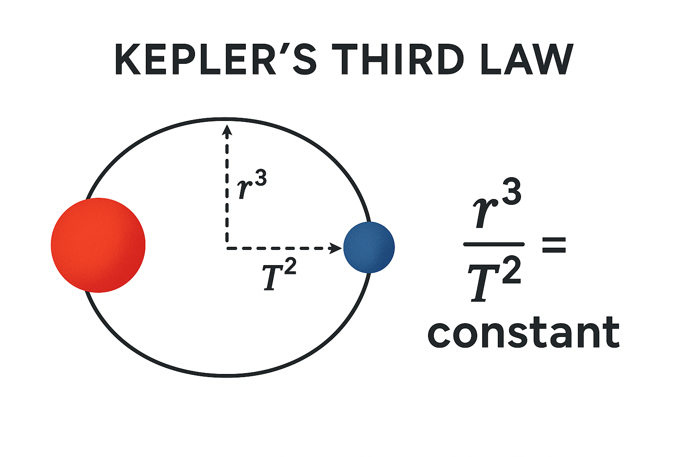

1.1 Accretion Disk Simulation
This simulation models swirling matter spiraling into a black hole. I built this using Python and matplotlib to visualize disk density and relativistic frame dragging effects.
Synopsis →I am an 11th grade student at Middle College High School.
I am also an aspiring astrophysicist and engineer with a passion for learning and research.
I hope to bring the love of science and creativity to other's and my life through collaboration, commitment, and character.

This simulation models swirling matter spiraling into a black hole. I built this using Python and matplotlib to visualize disk density and relativistic frame dragging effects.
Synopsis →
This paper summarizes the processing and findings of the accretion disk simulation project. It discusses the physical principles behind accretion disks and the computational methods used to model them.
Read →
The deduction of the existence of dark matter can be partially attributed to inferences made using Kepler's third law. One can deduce, from this law, that there is a positive relationship between the increase of mass and increase in velocity, exponentially and vice versa for a decrease in mass. In modern day physics, the scientific community has recognized a common pattern in the formation and structure of a stellar system to be that lighter, less massive, more gas based bodies orbit towards read more. the rims of systems. Therefore, using Kepler's third law, we can deduce that the velocity of objects, in general, decrease due to a decrease in mass. However, data from telescopes and other observational mediums have shown that velociities of objects around the rims of systems are very close to the speed of ones closer to the rim. When viewing graphs, users can also see that the calculation based system shows a negative exponential behavior, whereas the reality concludes a flat, slightly decreasing, line. Therefore, we can deduce the existence of furhter, non-luminous, mass, also known as dark matter.minimize
Learn More →